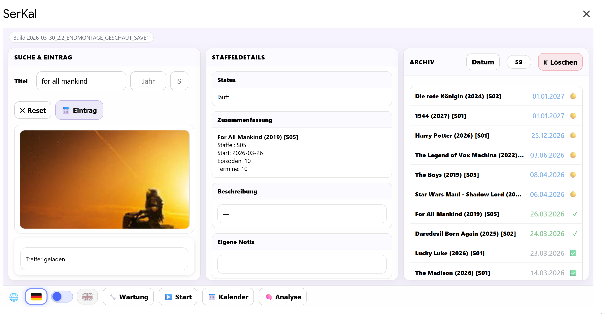

Install SerKal
The installation section guides you step by step through Google account, TMDB key, Apps Script, archive folder and first test.

Installation
This guide is intentionally simple. Please follow the steps in order.
1. Open Google Sheets
https://sheets.google.com
Click the large “+” button to create a new spreadsheet.
Important: Do not paste the code into the spreadsheet. The spreadsheet is only the starting point.
2. Open Apps Script
Click Extensions and then select Apps Script.
3. Create multiple files
SerKal consists at least of Code.gs and one HTML file for the interface.
4. Insert code
Paste the complete content into the matching file. If only the UI is inserted, SerKal will not work.
5. Configuration
Enter folder ID and TMDB API key correctly.
FOLDER_ID
TMDB_API_KEY
6. Save
Use CTRL+S or the save icon.
7. Return to the spreadsheet
Close Apps Script and return to the spreadsheet.
8. Confirm permissions
Google's security prompt appears on first start. This is normal.
9. Start SerKal
In the Serienverwaltung menu, click SerKal öffnen.